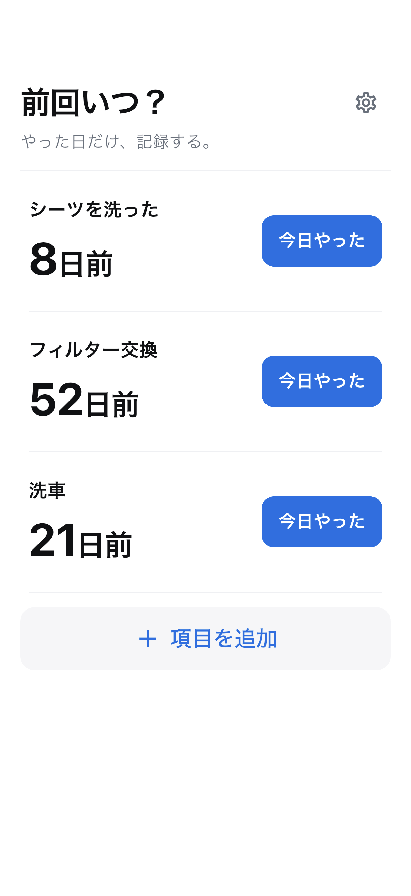

前回いつ？ · iOS / Android
掃除や交換、手入れの実施日をワンタップで記録。前回からの日数を確認できます。
公開準備中

使い方
掃除、交換、手入れ。覚えておきたい項目を名前だけで追加します。
「今日やった」で即保存。間違えたら、その場で取り消せます。
ホームで経過日数を確認。項目名をタップすると履歴と平均間隔が分かります。
必要なものだけ
本アプリは通知や推奨周期を提供しません。平均は本人の記録に基づきます。
項目と実施履歴は端末内に保存。記録機能はオフラインでも利用できます。広告配信には通信を使用します。
OSのバックアップに含まれる場合がありますが、復元は保証しません。